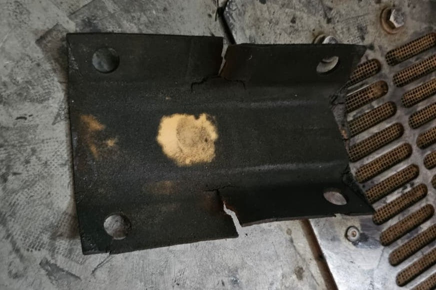

E Building Elevator No. 1 Back in Service After Repairs
Residents of Life Republic R3, E Building, can now use Elevator No. 1, which has been repaired and restored to normal operation following a breakdown.
During inspection, the maintenance team identified that the brake shoe lining had worn out and developed cracks, affecting the proper functioning of the elevator and causing it to malfunction and stop.
What is a Brake Shoe Lining and Why Is It Important?

The brake shoe lining is a friction-based material fitted to the elevator's braking mechanism. It plays an important role in the safe operation of the lift.
Whenever an elevator stops at a floor, its braking system engages to hold the elevator in position and prevent unintended movement. The brake shoe lining provides the necessary friction against the braking surface, helping the elevator remain stationary when the motor is not driving it.
Over time, this lining can wear out, deteriorate or develop cracks, potentially affecting the braking mechanism's performance. Regular inspection and timely replacement are therefore important for elevator safety and reliability.
The damaged lining in E Building's Elevator No. 1 has now been replaced with a new component. Following the repair, the elevator is functioning again.
Let's Take Care of Our Elevators!
Elevators are shared facilities used by hundreds of residents every day. A little care and responsible behaviour can help prevent breakdowns, reduce maintenance costs and extend the life of the equipment.
- Avoid Jumping or Shaking: Do not jump, bounce or make sudden movements inside the elevator. Sudden movements can cause unnecessary mechanical disturbances. Parents are requested to teach children to use lifts responsibly.
- Keep Water Away: Avoid spilling or pouring water inside the lift. Water entering door gaps, floor edges or electrical components can cause malfunctions and damage.
- Do Not Litter: Avoid dropping food wrappers, paper, plastic or other waste inside the elevator or near its door tracks. Small objects can obstruct door mechanisms and sensors.
- Maintain Cleanliness: Do not spit or throw any substances into the gap between elevator doors. Apart from being unhygienic, foreign material can interfere with the door mechanism.
- Respect the Weight Capacity: Never exceed the maximum passenger or weight capacity displayed inside the elevator. Overloading can affect elevator operation and trigger safety systems.
- Avoid Holding the Lift Unnecessarily: Do not keep elevator doors open for extended periods or obstruct them unnecessarily. Use the door-open button when required and allow others to use the lift.
- Avoid Repeated Button Pressing: Press the desired floor button only once. Repeatedly pressing buttons does not make the elevator arrive faster and can cause unnecessary wear on the buttons.
A Shared Responsibility
Elevator maintenance is not just the responsibility of the facility management team. Every resident plays a role in keeping these essential shared facilities safe, clean and operational.
Responsible usage can help reduce avoidable breakdowns, minimise repair expenses and ensure a smoother experience for everyone.
Let's use our elevators responsibly. A little care today can prevent an inconvenience tomorrow!